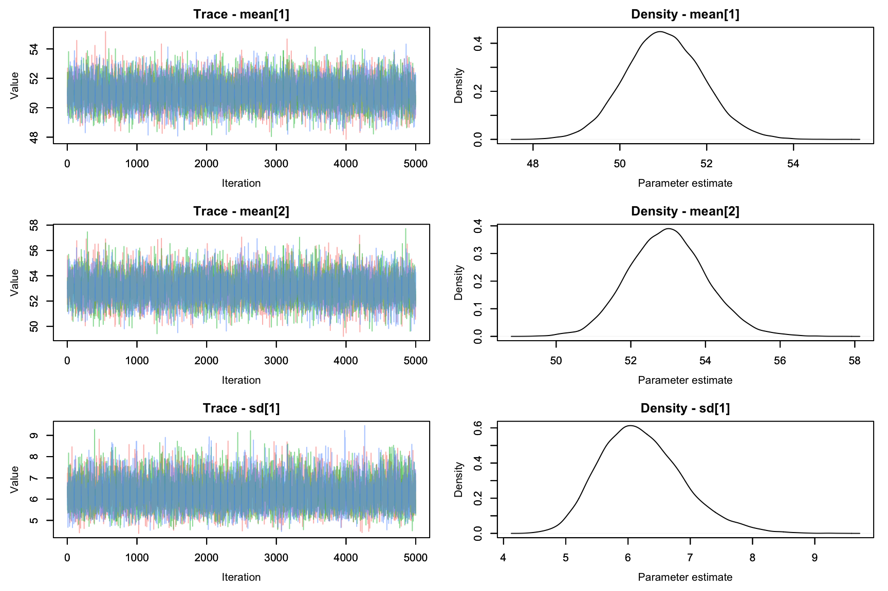

Bayesian alternative to t-test
กิจกรรมนี้จะกล่าวถึงการใช้สถิติแบบเบส์สำหรับการวิเคราะห์เพื่อเปรียบเทียบค่าเฉลี่ยสองกลุ่ม ผู้อ่านจะเห็นว่าการวิเคราะห์แบบเบส์เป็นวิธีการที่ให้สารสนเทศเกี่ยวกับความแตกต่างของค่าเฉลี่ยระหว่างตัวอย่างสองกลุ่มที่มากกว่าการทดสอบ t-test แบบดั้งเดิม
การเปรียบเทียบด้วยวิธีการแบบเบส์ทำให้ผู้วิเคราะห์สามารถประมาณการแจกแจงความน่าจะเป็นภายหลัง ซึ่งเป็นข้อมูลสำคัญสำหรับการคำนวณช่วงความน่าเชื่อถือ (credible intervals) ของพารามิเตอร์ต่าง ๆ ได้แก่ ค่าเฉลี่ย ส่วนเบี่ยงเบนมาตรฐาน รวมทั้งความแตกต่างระหว่างค่าเฉลี่ย ส่วนเบี่ยงเบนมาตรฐาน และขนาดอิทธิพล
ผลการทดสอบเพื่อเปรียบเทียบความแตกต่างของค่าเฉลี่ยสามารถตัดสินใจได้ทั้ง การยอมรับสมมุติฐานหลัก (accept null hypothesis) และยอมรับสมมุติฐานทางเลือก (accept alternative hypothesis) ซึ่งแตกต่างและมีความยืดหยุ่นมากกว่าการทดสอบเพื่อเปรียบเทียบค่าเฉลี่ยแบบดั้งเดิมอย่างมาก
Traditional t-test
สมมุติว่านักวิจัยต้องการเปรียบเทียบความแตกต่างของผลสัมฤทธิ์ทางการเรียนวิชาคณิตศาสตร์ และทักษะการแก้ปัญหา ระหว่างนักเรียนที่ได้รับการสอนแบบบรรยาย และแบบใช้ปัญหาเป็นฐาน ข้อมูลค่าสังเกตเป็นดังนี้
set.seed(1253)
dat<-data.frame(Ach=c(rnorm(50,50,5),rnorm(50,48,15)),
Solve=c(rt(50,3,0)*5+50,rt(50,3,0)*10+70),
Method=c(rep(1,50),rep(2,50)))
head(dat)
Ach Solve Method
1 57.88928 50.01438 1
2 51.20072 49.48460 1
3 43.34361 43.94092 1
4 55.12593 48.40898 1
5 45.35700 50.11348 1
6 53.47266 56.45850 1tail(dat)
Ach Solve Method
95 57.27558 59.71888 2
96 55.89447 71.65605 2
97 54.42124 66.07296 2
98 50.62769 70.03023 2
99 44.82859 79.04969 2
100 46.05098 99.74767 2summary(dat)
Ach Solve Method
Min. :20.93 Min. : 28.48 Min. :1.0
1st Qu.:43.60 1st Qu.: 49.28 1st Qu.:1.0
Median :49.68 Median : 57.62 Median :1.5
Mean :49.06 Mean : 60.96 Mean :1.5
3rd Qu.:55.05 3rd Qu.: 70.84 3rd Qu.:2.0
Max. :80.01 Max. :117.62 Max. :2.0 โดยที่ Ach และ Solve คือผลสัมฤทธ์และทักษะการแก้ปัญหาตามลำดับ ส่วน TMethod = 1 คือกลุ่มนักเรียนที่ได้รับการสอนแบบบรรยาย และ TMethod = 2 คือกลุ่มนักเรียนที่ได้รับการสอนแบบใช้ปัญหาเป็นฐาน
par(mfrow=c(1,2))
plot(density(dat$Ach[1:50]),type="l", main="Ach", xlim=c(0,100), lty=1)
points(density(dat$Ach[51:100]),type="l", main="", lty=2)
legend(0,0.06, legend=c("LEC","PBL"),lty=c(1,2), bty="n")
plot(density(dat$Solve[1:50]),type="l", main="Solve", xlim=c(0,100), lty=1)
points(density(dat$Solve[51:100]),type="l", main="", lty=2)
legend(0,0.04, legend=c("LEC","PBL"),lty=c(1,2), bty="n")
หากทำการวิเคราะห์ด้วยสถิติทดสอบ t-test แบบดั้งเดิม พบว่าได้ผลการวิเคราะห์ดังนี้
Welch Two Sample t-test
data: Ach by Method
t = 1.9067, df = 66.984, p-value = 0.06085
alternative hypothesis: true difference in means between group 1 and group 2 is not equal to 0
95 percent confidence interval:
-0.179778 7.852900
sample estimates:
mean in group 1 mean in group 2
50.97567 47.13911
Welch Two Sample t-test
data: Solve by Method
t = -9.0266, df = 70.811, p-value = 2.144e-13
alternative hypothesis: true difference in means between group 1 and group 2 is not equal to 0
95 percent confidence interval:
-27.47607 -17.53326
sample estimates:
mean in group 1 mean in group 2
49.70763 72.21230 ผลการวิเคราะห์ที่ได้จาก t-test ข้างต้นให้สารสนเทศใดแก่ผู้วิเคราะห์บ้าง?
Bayesian approach 1: normal model
การเปรียบเทียบค่าเฉลี่ยด้วยวิธีการแบบเบส์สามารถทำได้หลายวิธีการ วิธีการหนึ่งที่สามารถทำได้อาจกำหนดโมเดลดังรูปด้านล่าง

จากรูปจะเห็นว่ามีการกำหนดโมเดลให้กับค่าสังเกตในแต่ละกลุ่มเป็นการแจกแจงแบบปกติที่มีค่าเฉลี่ยเท่ากับ \(\mu_1\) และ \(\mu2\) และพารามิเตอร์ความเที่ยงตรงเท่ากับ \(\tau_1\) และ \(\tau_2\) ตามลำดับ และ
Prior Distributions
การกำหนดการแจกแจงความน่าจะเป็นเบื้องต้นให้กับพารามิเตอร์ต่าง ๆ ของโมเดลค่าสังเกต โดยพารามิเตอร์ค่าเฉลี่ยมีการแจกแจงความน่าจะเป็นเบื้องต้นเป็นการแจกแจงแบบปกติ ส่วนพารามิเตอร์ความเที่ยงตรงมีการแจกแจงความน่าจะเป็นเบื้องต้นเป็นแบบแกมมา (Gamma distribution)
การแจกแจงแบบแกมมา มีพารามิเตอร์กำกับการแจกแจง 2 ตัวได้แก่ shape และ rate parameters ซึ่งเขียนแทนด้วยสัญลักษณ์ \(\alpha>0\) และ \(\beta >0\) และมีฟังก์ชันความน่าจะเป็นดังนี้
\(p(\theta)=\frac{\beta^{\alpha}}{\Gamma(\alpha)}\theta^{\alpha-1}exp\{-\beta \theta \}\) โดยที่ \(\theta>0\)
รูปต่อไปนี้แสดงตัวอย่างการแจกแจงความน่าจะเป็นแบบแกมมา เมื่อกำหนดพารามิเตอร์เป็นค่าต่าง ๆ
par(mfrow=c(1,2), mar=c(5,5,1,1))
theta<-seq(0,5,0.01)
plot(theta, dgamma(theta,1,1), type="l", col=2, ylab="Density", xlab=expression(tau))
points(theta, dgamma(theta,2,1), type="l", col=3)
points(theta, dgamma(theta,3,1), type="l", col=4)
points(theta, dgamma(theta,5,1), type="l", col=5)
plot(theta, dgamma(theta,1,2), type="l", col=2, ylab="Density", xlab=expression(tau))
points(theta, dgamma(theta,1,4), type="l", col=3)
points(theta, dgamma(theta,1,6), type="l", col=4)
points(theta, dgamma(theta,1,10), type="l", col=5)

แนวทางการกำหนดค่าพารามิเตอร์ในการแจกแจงความน่าจะเป็นก่อนหน้าของพารามิเตอร์ความเที่ยงตรง (\(\tau\)) การทำได้สองลักษณะ ลักษณะแรกคือ noninformative prior อาจกำหนดให้พารามิเตอร์ \(\alpha\) และ \(\beta\) มีค่าน้อย ๆ เช่น dgamma(0.01,0.01) หรือ dgamma(0.001,0.001) รูปด้านล่างแสดงตัวอย่างของการแจกแจงดังกล่าว
par(mar=c(5,3,1,1))
theta<-seq(0,5,0.01)
plot(theta, dgamma(theta,0.01,0.01), type="l", col=2, ylab="Density", xlab=expression(tau))

อีกลักษณะหนึ่งคือการกำหนดให้มีสารสนเทศในการแจกแจงความน่าจะเป็นก่อนหน้า โดยอาจมองว่าพารามิเตอร์ \(\alpha\) มีค่าเท่ากับฐานนิยมของ \(\tau\) และ \(\beta\) มีค่าเท่ากับส่วนเบี่ยงเบนมาตรฐานของ \(\tau\) (Kruschke, 2012)
กิจกรรม 1
ดำเนินการวิเคราะห์ข้อมูลเพื่อเปรียบเทียบค่าเฉลี่ยผลสัมฤทธิ์และทักษะการแก้ปัญหาทางคณิตศาสตร์ ระหว่างกลุ่มนักเรียนที่ได้รับการสอนแบบบรรยายและใช้ปัญหาเป็นฐาน ด้วยวิธีการแบบเบส์ โดยใช้การกำหนดโมเดลข้างต้น แล้วตอบคำถามต่อไปนี้
ตัวอย่างพารามิเตอร์ที่จำลองจากอัลกอริทึม MCMC มีคุณสมบัติที่เหมาะสมสำหรับนำไปวิเคราะห์เพื่อตอบคำถามข้างต้นหรือไม่ เพราะเหตุใด
ผลการวิเคราะห์เพื่อเปรียบเทียบความแตกต่างของผลสัมฤทธิ์และทักษะการแก้ปัญหาทางคณิตศาสตร์ระหว่างกลุ่มนักเรียนทั้งสองกลุ่มเป็นอย่างไร?
สารสนเทศที่ได้จากการวิเคราะห์ด้วยสถิติแบบเบส์ กับสถิติแบบดั้งเดิมมีความแตกต่างกันอย่างไร
Bayesian approach 2: generalized student’s t model
การกำหนดโมเดลสำหรับวิเคราะห์ข้อมูลด้วยสถิติแบบเบส์สามารถกำหนดได้อย่างหลากหลาย กล่าวคือในปัญหาเดียวกันหากผู้วิเคราะห์มีมุมมองหรือกรอบแนวคิดที่แตกต่างกันก็สามารถกำหนดโมเดลการวิเคราะห์ที่แตกต่างกันได้ รูปด้านล่างแสดงการกำหนดโมเดลสำหรับเปรียบเทียบค่าเฉลี่ยสองกลุ่มในอีกลักษณะหนึ่ง
 เมื่อเปรียบเทียบกับโมเดลที่ 1 ที่ได้ดำเนินการวิเคราะห์ไปแล้ว นิสิตคิดว่าโมเดลนี้มีความเหมือนและแตกต่างไปจากเดิมอย่างไรบ้าง?
เมื่อเปรียบเทียบกับโมเดลที่ 1 ที่ได้ดำเนินการวิเคราะห์ไปแล้ว นิสิตคิดว่าโมเดลนี้มีความเหมือนและแตกต่างไปจากเดิมอย่างไรบ้าง?
ทั้งนี้การแจกแจงความน่าจะเป็นแบบทีดังกล่าวเป็นอีก version หนึ่งเรียกว่า Generalized student’s t distribution ซึ่งมีพารามิเตอร์กำกับการแจกแจง 3 ตัวได้แก่ ค่าเฉลี่ย ส่วนเบี่ยงเบนมาตรฐาน และองศาความเป็นอิสระ (\(\nu>0\)) และมีฟังก์ชันความน่าจะเป็นดังนี้
\(p(y|\mu, \sigma, \nu)=\frac{\Gamma(\frac{\nu+1}{2})}{\Gamma(\frac{\nu}{2})\sqrt{\pi\nu}\sigma}(1+\frac{1}{\nu}(\frac{y-\mu}{\sigma})^2)^{-\frac{\nu+1}{2}}\)
การเลือกใช้การแจกแจงแบบทีเป็นโมเดลค่าสังเกตมีข้อดีกว่าการแจกแจงแบบปกติคือ การแจกแจงแบบทีเป็นการแจกแจงที่มีส่วนปลาย (หาง) ของการแจกแจงที่หนากว่าการแจกแจงแบบปกติ ซึ่งทำให้โมเดลของค่าสังเกตมีความแกร่งต่อการเกิดค่าผิดปกติ (outlier) มากกว่าโมเดลที่ใช้การแจกแจงแบบปกติ ความหนา ณ ส่วนปลายของการแจกแจงแบบทีสามารถกำหนดผ่านค่าพารามิเตอร์องศาความเป็นอิสระ (\(\nu\)) โดยถ้า \(\nu\) ยิ่งมีค่าน้อย การแจกแจงทีจะยิ่งมีส่วนปลายที่หนาขึ้น ในทางกลับกันหาก \(\nu\) มีค่ามาก การแจกแจงทีดังกล่าวจะลู่เข้าหาการแจกแจงแบบปกติ กล่าวได้ว่าโมเดลนี้เป็นกรณีทั่วไปของ model 1 ที่ได้กล่าวไว้ก่อนหน้านี้นั่นเอง รูปต่อไปนี้แสดงฟังก์ชันความหนาแน่นของการแจกแจงความน่าจะเป็นแบบที เมื่อมีองศาความเป็นอิสระต่าง ๆ กัน
par(mar=c(5,5,1,1))
x<-seq(-6,6,0.01)
plot(x, dnorm(x,0,1), type="l", lty=1, ylab="Density")
points(x, dt(x,1), type="l",lty=2)
points(x, dt(x,2), type="l",lty=3)
points(x, dt(x,3), type="l",lty=4)
points(x, dt(x,5), type="l",lty=5)
points(x, dt(x,10), type="l",lty=6)
text(0,0.1, "t-Distribution")
text(2, 0.38, "Normal Distriibution")
กิจกรรม 2
ดำเนินการวิเคราะห์ข้อมูลเพื่อเปรียบเทียบค่าเฉลี่ยผลสัมฤทธิ์และทักษะการแก้ปัญหาทางคณิตศาสตร์ ระหว่างกลุ่มนักเรียนที่ได้รับการสอนแบบบรรยายและใช้ปัญหาเป็นฐาน ด้วยวิธีการแบบเบส์ โดยใช้การกำหนดโมเดลข้างต้น แล้วตอบคำถามต่อไปนี้
ตัวอย่างพารามิเตอร์ที่จำลองจากอัลกอริทึม MCMC มีคุณสมบัติที่เหมาะสมสำหรับนำไปวิเคราะห์เพื่อตอบคำถามข้างต้นหรือไม่ เพราะเหตุใด
ผลการวิเคราะห์เพื่อเปรียบเทียบความแตกต่างของผลสัมฤทธิ์และทักษะการแก้ปัญหาทางคณิตศาสตร์ระหว่างกลุ่มนักเรียนทั้งสองกลุ่มเป็นอย่างไร?
ระหว่างโมเดล 1 กับโมเดล 2 โมเดลใดเป็นโมเดลที่เหมาะสมมากกว่า เพราะเหตุใด
Bayesian approach 3: log-normal model
นอกจากการกำหนดโมเดลการวิเคราะห์ทั้งสอง ผู้วิเคราะห์ยังสามารถกำหนดโมเดลการวิเคราะห์อื่น ๆ ได้อย่างหลากหลาย ทั้งนี้ต้องคำนึงถึงธรรมชาติของข้อมูลและพารามิเตอร์ภายในโมเดลการวิเคราะห์ เช่น หากผู้วิเคราะห์สำรวจข้อมูลแล้วพบว่าข้อมูลคะแนนค่าสังเกตที่ต้องการนำมาวิเคราะห์มีการแจกแจงที่เบ้ขวา (positively skewed) ผู้วิเคราะห์อาจกำหนดโมเดลของค่าสังเกตเป็นการแจกแจงแบบ log-normal โดยอาจเขียนคำสั่งดังนี้
"model{
for(i in 1:n)
{
#log-normal likelihood
y[i]~dlnorm(mu[x[i]],tau[x[i]])
}
for(j in 1:2)
{
# prior distributions
mu[j]~dnorm(0,0.01)
tau[j]~dgamma(0.01,0.01)
sigma2[j]<-1/tau[j]
# calculate mean and sd of the distribution
mean[j]<-exp(mu[1]+sigma2[j]/2)
sd[j]<- sqrt((exp(sigma2[j])-1)*exp(2*mu[j]+sigma2[j]))
}
}"
จากชุดคำสั่งระบุโมเดลในข้างต้นจะเห็นว่า การแจกแจง log-normal พารามิเตอร์ \(\mu\) และ \(\sigma^2\) ไม่ใช่พารามิเตอร์ค่าเฉลี่ยและความแปรปรวนของการแจกแจง การคำนวณค่าเฉลี่ย และความแปรปรวนของ log-normal distribution สามารถคำนวณได้ดังนี้ (https://en.wikipedia.org/wiki/Log-normal_distribution)
\(Mean = exp(\mu+\frac{\sigma^2}{2})\)
\(Variance = [exp(\sigma^2)-1]exp(2\mu+\sigma^2)\)
รูปต่อไปนี้แสดงการตรวจสอบคุณภาพของตัวอย่างข้อมูลจำลองที่สร้างขึ้นจากลูกโซ่มาร์คอฟ จากรูปพบว่าตัวอย่างที่สร้างขึ้นมีลักษณะที่แสดงถึงการลู่เข้าสู่สถานะคงตัว (stationary distribution) เมื่อพิจารณาอัตสหสัมพันธ์ภายในแต่ละลูกโซ่ของพารามิเตอร์พบว่ามีค่าต่ำตั้งแต่ lag ที่ 1 เป็นต้นไป และเมื่อพิจารณาผลจากค่าสถิติ PSRF พบว่ามีค่าเท่ากับ 1 ในทุกพารามิเตอร์ นั่นหมายความว่า ลูกโซ่ของพารามิเตอร์ภายในโมเดลที่สร้างขึ้นพารามิเตอร์ละ 3 ชุดนั้น มีการลู่เข้าหาการแจกแจงสถานะคงตัวเดียวกัน ผลการวิเคราะห์ทั้งหมดนี้บ่งชี้ว่าตัวอย่างลูกโซ่ที่จำลองขึ้นจากกระบวนการสุ่มนี้มีคุณภาพที่ดี และน่าจะเป็นตัวอย่างของพารามิเตอร์ที่สุ่มจากการแจกแจงความน่าจะเป็นภายหลังที่ต้องการ

mean[1] mean[2] sd[1] sd[2]
Lag 0 1.000000000 1.000000000 1.000000000 1.000000000
Lag 10 0.002117818 -0.001586005 -0.004173995 0.001063236
Lag 50 -0.006628564 -0.007791238 -0.002182255 0.005589014
Lag 100 0.010180744 0.008790487 0.005640398 0.005188884
Lag 500 -0.002266881 -0.008254212 -0.002178094 0.001552742
diff effectsize
Lag 0 1.0000000000 1.0000000000
Lag 10 0.0000929066 0.0008682332
Lag 50 -0.0029025030 -0.0068767664
Lag 100 0.0033541139 0.0056011177
Lag 500 -0.0076327141 -0.0127589617เมื่อพิจารณาผลการวิเคราะห์สำหรับเปรียบเทียบค่าเฉลี่ยพบว่า ค่าเฉลี่ยภายหลังของพารามิเตอร์ค่าเฉลี่ยผลสัมฤทธิ์ในกลุ่มบรรยายและใช้ปัญหาเป็นฐาน มีค่าเท่ากับ 51.02 และ 52.99 คะแนน และมีค่าเฉลี่ยภายหลังของพารามิเตอร์ส่วนเบี่ยงเบนมาตรฐานของผลสัมฤทธิ์เป็น 6.23 และ 14.54 คะแนน ตามลำดับ นอกจากนี้ยังพบว่าส่วนเบี่ยงเบนมาตรฐานภายหลังของพารามิเตอร์ทั้ง 4 ภายในโมเดล มีค่าอยู่ในช่วง 0.66 - 1.85 ตามลำดับ คิดเป็นสัมประสิทธิ์การแปรผันภายหลังของพารามิเตอร์อยู่ในช่วงร้อยละ 1.72 - 12.72 แสดงให้เห็นว่าการแจกแจงความน่าจะเป็นภายหลังของพารามิเตอร์มีความน่าเชื่อถืออยู่ในระดับที่รับได้
mean sd 95%_HPDL 95%_HPDU Rhat n.eff
mean[1] 51.02448835 0.885342263 49.25368528 52.72227133 1 15000
mean[2] 52.98708630 1.041930856 50.93246816 54.98998247 1 15000
sd[1] 6.22197429 0.666306969 4.99772705 7.56166670 1 15000
sd[2] 14.53318175 1.845666077 11.23820707 18.27661074 1 15000
diff -1.96259795 0.513099955 -2.97031454 -1.04145854 1 15000
effectsize -0.04676912 0.008715738 -0.06439884 -0.03034028 1 14778เมื่อพิจารณาความแตกต่างของค่าเฉลี่ยผลสัมฤทธิ์ระหว่างวิธีการสอนทั้งสองพบว่า มีค่าเฉลี่ยภายหลังของผลต่างเท่ากับ -1.96 คะแนน เมื่อพิจารณาการแจกแจงความน่าจะเป็นภายหลังของขนาดอิทธิพลประกอบพบว่า ขนาดอิทธิพลที่คำนวณจากสูตรของ Cohen มีการแจกแจงความน่าจะเป็นภายหลังอยู่บนช่วงประมาณ -0.08 ถึง -0.02 ซึ่งถือว่าเป็นขนาดอิทธิพลในระดับที่ต่ำมาก
สรุป
จากตัวอย่างทั้ง 3 จะเห็นว่า การวิเคราะห์แบบเบส์นี้ผู้วิเคราะห์สามารถเลือกกำหนดโมเดลได้ค่อนข้างหลากหลาย ขึ้นอยู่กับความเหมาะสมและวิจารณญาณของผู้วิเคราะห์ ปัญหาที่ตามมาคือหากในปัญหาเดียวกันผู้วิเคราะห์สมมุติฐานหรือโมเดลการวิเคราะห์ที่มากกว่า 1 โมเดลแล้ว จะทราบได้อย่างไรมากโมเดลใดเป็นโมเดลที่มีความเหมาะสมมากที่สุด ??
Bayesian alternative to ANOVA (BANOVA)
หัวข้อนี้จะกล่าวถึงการวิเคราะห์ความแปรปรวนแบบเบส์ รายละเอียดมีดังนี้
One-Way BANOVA
นักวิจัยทดลองใช้วิธีการสอน 4 วิธี กับนักเรียนจำนวน 4 กลุ่มที่มีการวิเคราะห์แล้วว่ามีพื้นฐานใกล้เคียงกัน เมื่อสอนจบตามแผนแล้วมีการวัดผลการเรียนรู้ภายหลัง ได้ผลดังนี้
| lec | pbl | cop | dem |
|---|---|---|---|
| 5 | 11 | 6 | 3 |
| 6 | 8 | 9 | 4 |
| 7 | 7 | 8 | 1 |
| 3 | 7 | 5 | 1 |
| 7 | 9 | 4 | 4 |
| 5 | 7 | 4 | 5 |
| 2 | 8 | 7 | 2 |
| 4 | 10 | 6 | 3 |
โมเดลการวิเคราะห์ความแปรปรวนทางเดียวสามารถเขียนได้สองลักษณะ ลักษณะแรกเรียกว่า mean model เขียนได้ดังนี้
\(y_{ij}=\mu_j+\epsilon_{ij}\)
อีกลักษณะหนึ่งคือ effect model
\(y_{ij}=\alpha+\beta_j+\epsilon_{ij}\) เมื่อ \(\sum_{j=1}^J\beta_j=0\) และ \(\alpha\) คือ grand mean ดังนั้น \(alpha+beta_j=\mu_j\) ก็คือ group mean
รูปด้านล่างแสดงโมเดลค่าสังเกตแบบ effect model
 #### กิจกรรม 3
#### กิจกรรม 3
วิเคราะห์ ANOVA เพื่อเปรียบเทียบค่าเฉลี่ยของชุดข้อมูลข้างต้น
วิเคราะห์ BANOVA เพื่อเปรียบเทียบค่าเฉลี่ยของชุดข้อมูลข้างต้น
ผลการวิเคราะห์จากทั้งสองวิธีให้สารสนเทศที่เหมือนหรือแตกต่างกันอย่างไร?
ผลการวิเคราะห์แบบ Traditional
เป็นแบบฝึกหัดให้ผู้อ่าน
ผลการวิเคราะห์แบบ Bayesian
ส่วนจัดการข้อมูลนำเข้า
คำสั่งระบุโมเดลข้างล่างเขียนในลักษณะ effect model จะเห็นว่าการประมาณค่า treatment effect (beta) ในโมเดล ไม่ได้ประมาณอย่างอิสระทั้ง 4 กลุ่ม แต่จะประมาณเพียง 3 กลุ่ม แล้วใช้ผลการประมาณดังกล่าวมาเป็นค่าประมาณของกลุ่มที่เหลือ ที่ต้องเขียนในลักษณะนี้เป็นเพราะเงื่อนไขของ effect model ที่มีการ constraint พารามิเตอร์ treatment effect ดังกล่าว (\(\sum_{j=1}^J\beta_j=0\))
"model{
#likelihood function
for(i in 1:n)
{
y[i]~dnorm(mu[i], tau) #homogeneity of variance model
mu[i]<-alpha+beta[x[i]] #effects model
}
#prior distribution
tau ~ dgamma(0.01,0.01)
sigma<-1/sqrt(tau) #root mean square of the ANOVA model (RMSE)
alpha~dnorm(0,0.01) #grand mean
for (j in 2:J)
{
beta[j]~dnorm(0,0.01)
}
beta[1]<- -(sum(beta[2:J]))
}"
fit.banova<-run.jags(method="parallel",
model=banova,
monitor=c("mean","sigma"),
data=dataList,
n.chains=3,
sample = 10000,
thin=3,
summarise=TRUE,
plots=FALSE,
keep.jags.files = FALSE,
silent.jags = T)
samples<-as.mcmc.list(fit.banova)
ผลการตรวจสอบคุณภาพของลูกโซ่ใน output ด้านขวาแสดงให้เห็นว่า ตัวอย่างลูกโซ่มีคุณภาพที่ดี และสามารถใช้เพื่อประมาณการแจกแจงความน่าจะเป็นภายหลังของพารามิเตอร์ภายในโมเดลได้
MCMCtrace(samples, pdf=F)
autocorr.diag(samples)
mean[1] mean[2] mean[3] mean[4]
Lag 0 1.000000000 1.000000000 1.000000000 1.0000000000
Lag 3 -0.010322228 0.009402559 0.003240864 0.0007744016
Lag 15 0.004295750 -0.007530674 -0.001217727 0.0036276692
Lag 30 0.005091883 0.002204231 -0.012416509 0.0026950145
Lag 150 -0.006132002 0.000456659 -0.006595624 -0.0038344416
sigma
Lag 0 1.000000e+00
Lag 3 -1.638865e-04
Lag 15 1.030252e-02
Lag 30 5.322524e-06
Lag 150 9.192150e-03เมื่อพิจารณาผลการวิเคราะห์การแจกแจงความน่าจะเป็นภายหลังของพารามิเตอร์ที่สำคัญภายในโมเดลพบว่า กลุ่มที่ได้รับการสอนแบบโครงงาน เป็นกลุ่มที่มีแนวโน้มที่จะมีคะแนนสอบสูงสุด โดยมีค่าเฉลี่ยคะแนนสอบที่คิดจากค่าเฉลี่ยภายหลังเท่ากับ 8.35 คะแนน (SD = 0.607) รองลงมาคือกลุ่มที่ได้รับวิธีการสอนแบบร่วมมือ มีค่าเฉลี่ยภายหลังเท่ากับ 6.12 คะแนน (SD = 0.605) และพบว่ากลุ่มที่ได้รับการสอนแบบสาธิตเป็นกลุ่มที่มีค่าเฉลี่ยภายหลังต่ำที่สุด โดยมีค่าเท่ากับ 2.89 คะแนน (SD = 0.605)
MCMCsummary(samples, HPD=TRUE)
mean sd 95%_HPDL 95%_HPDU Rhat n.eff
mean[1] 4.869796 0.6035584 3.67108 6.04177 1 30916
mean[2] 8.359963 0.6063316 7.12061 9.51072 1 29456
mean[3] 6.116177 0.6087424 4.94823 7.33789 1 30000
mean[4] 2.879811 0.6107672 1.67712 4.08693 1 30000
sigma 1.700276 0.2378854 1.28503 2.18564 1 29595Multiple Comparison
การวิเคราะห์ BANOVA ไม่จำเป็นต้องทำการทดสอบภาพรวมแบบการทดสอบ F-test ใน ANOVA ทั้งนี้เป็นเพราะ BANOVA ใช้การแจกแจงความน่าจะเป็นภายหลังของพารามิเตอร์เป็นเครื่องมือในการอนุมานเชิงสถิติ ซึ่งเป็นการแจกแจงที่อยู่ในปริภูมิของพารามิเตอร์โดยตรง และไม่ได้มีการเปลี่ยนแปลงแม้ว่าจำนวนคู่ของการเปรียบเทียบจะมีมากหรือน้อยก็ตาม ขอบเขตและความหนาแน่นของพารามิเตอร์ก็ยังเหมือนเดิม ดังนั้น BANOVA จึงสามารถทำการเปรียบเทียบรายคู่ (multiple comparison) ได้โดยที่ไม่จำเป็นต้องผ่านการทดสอบภาพรวมก่อน
นอกจากการเปรียบเทียบแบบรายคู่แล้ว BANOVA ยังสามารถทำการวิเคราะห์เปรียบเทียบแบบไม่ใช่รายคู่ (non-pairwise comparison) ได้อีกด้วย ตัวอย่างด้านล่างแสดงการเขียนคำสั่งเพื่อสร้าง contrast สำหรับการเปรียบเทียบค่าเฉลี่ยผลสัมฤทธิ์ระหว่างคู่ของวิธีการสอนที่สนใจ ประกอบด้วย
c1: PBL vs PBL
c2: LEC vs DEM
c3: LEC vs COP
c4: PBL vs average of (LEC, DEM and COP)
#banova with constrast
banova<-"model{
#likelihood function
for(i in 1:n)
{
y[i]~dnorm(mu[i], tau) #homogeneity of variance model
mu[i]<-alpha+beta[x[i]] #effects model
}
#prior distribution
tau ~ dgamma(0.01,0.01)
sigma<-1/sqrt(tau) #root mean square of the ANOVA model (RMSE)
alpha~dnorm(0,0.01) #grand mean
for (j in 2:J)
{
beta[j]~dnorm(0,0.01)
}
beta[1]<- -sum(beta[2:J])
#define contrast
c1<-beta[2]-beta[1] #pbl vs lec
c2<-beta[1]-beta[4] #lec vs dem
c3<-beta[1]-beta[3] #lec vs cop
c4<-beta[2]-mean(beta[c(1,3,4)]) #pbl vs average of lec dem and cop
}"
fit.banova<-run.jags(method="parallel",
model=banova,
monitor=c("alpha","beta","sigma","c1","c2","c3","c4"),
data=dataList,
n.chains=3,
sample = 10000,
thin=3,
summarise=TRUE,
plots=FALSE,
keep.jags.files = FALSE,
silent.jags = T)
Calling 3 simulations using the parallel method...
All chains have finished
Simulation complete. Reading coda files...
Coda files loaded successfully
Finished running the simulationsamples<-as.mcmc.list(fit.banova)
samples.dat<-data.frame(as.matrix(samples))
ผลการวิเคราะห์ด้านล่างแสดงให้เห็นว่า มีเพียงการเปรียบเทียบเชิงเส้นที่ใช้เปรียบเทียบค่าเฉลี่ยคะแนนสอบของนักเรียนระหว่างกลุ่มที่ได้รับการจัดการเรียนการสอนด้วยวิธีบรรยายกับร่วมมือ ที่พบว่าช่วงความน่าเชื่อถือที่มีความหนาแน่นสูงสุด 95% มีค่าศูนย์อยู่บนช่วง ซึ่งบ่งชี้ว่าค่าเฉลี่ยคะแนนสอบระหว่างสองกลุ่มดังกล่าวมีค่าไม่แตกต่างกัน
MCMCsummary(samples, params=c("c1","c2","c3","c4"), HPD = TRUE)
mean sd 95%_HPDL 95%_HPDU Rhat n.eff
c1 3.497851 0.8534245 1.783160 5.149180 1 29639
c2 1.990585 0.8580990 0.313451 3.685220 1 30307
c3 -1.239713 0.8559952 -2.951090 0.417758 1 31201
c4 3.748142 0.6972171 2.366640 5.117360 1 28800summary<-MCMCsummary(samples, params=c("c1","c2","c3","c4"), HPD = TRUE)
par(mfrow=c(2,2))
hist(samples.dat$c1, col="orange", border="white", main="", xlab="c1: pbl vs lec", freq=F)
abline(v=0, lty=2)
lines(x=c(summary[1,3],summary[1,4]), y=c(0.01,0.01), lwd=3)
text(mean(samples.dat$c1),0.05, "95% HDI")
hist(samples.dat$c2, col="orange", border="white", main="", xlab="c1: lec vs dem", freq=F)
abline(v=0, lty=2)
lines(x=c(summary[2,3],summary[2,4]), y=c(0.01,0.01), lwd=3)
text(mean(samples.dat$c2),0.05, "95% HDI")
hist(samples.dat$c3, col="orange", border="white", main="", xlab="c1: lec vs cop", freq=F)
abline(v=0, lty=2)
lines(x=c(summary[3,3],summary[3,4]), y=c(0.01,0.01), lwd=3)
text(mean(samples.dat$c3),0.05, "95% HDI")
hist(samples.dat$c4, col="orange", border="white", main="", xlab="c1: pbl vs average", freq=F, xlim=c(0,7))
abline(v=0, lty=2)
lines(x=c(summary[4,3],summary[4,4]), y=c(0.01,0.01), lwd=3)
text(mean(samples.dat$c4),0.05, "95% HDI")
Two-Way BANOVA
การวิเคราะห์ความแปรปรวนสองทางทั้งที่มีและไม่มีอิทธิพลปฏิสัมพันธ์สามารถทำได้โดยขยายแนวคิดของ One-Way ANOVA
library(foreign)
dat<-read.spss("/Users/siwachoat/Documents/myblog/myblog/_posts/2022-02-19-glm1/manova.sav", to.data.frame=TRUE)
head(dat)
id gender schsize location cognitiveE EmotionalE BehavioralE
1 1 woman small นอกเมือง 3.666667 4.857143 4.0
2 2 woman small นอกเมือง 3.666667 4.428571 3.2
3 3 woman large นอกเมือง 2.916667 3.000000 3.6
4 4 man large นอกเมือง 3.083333 3.000000 3.6
5 5 man extra large นอกเมือง 3.000000 3.142857 2.8
6 6 man large นอกเมือง 3.833333 4.000000 4.0BANOVA package
การวิเคราะห์ด้วย JAGs ถึงแม้จะมีความยืดหยุ่นสูงแต่ก็อาจมีความลำบากในการเขียน syntax ทั้งในส่วนของโมเดล และส่วนของการวิเคราะห์ ปัจจุบันโปรแกรม R มี package จำนวนมากที่ถูกพัฒนาขึ้นสำหรับการวิเคราะห์เพื่ออนุมานเชิงสถิติแบบเบส์ในโมเดลต่าง ๆ
BANOVA เป็น pacakge หนึ่งที่มีประโยชน์สำหรับการอนุมานเชิงสถิติแบบเบส์โดยเฉพาะในการวิจัยเชิงทดลองที่มักมีการใช้การวิเคราะหืความแปรปรวนเป็นเครื่องมือหลักในการวิเคราะห์อิทธิพลของปัจจัยในการทดลองที่มีต่อตัวแปรตามที่สนใจ รายละเอียดต่าง ๆ ของ package สามารถอ่านเพิ่มเติมได้จาก https://www.jstatsoft.org/article/view/v081i09
Bayesian Regression
dat<-read.csv("/Users/siwachoat/Documents/myblog/myblog/_posts/2022-02-19-glm1/regression_dat1.csv")
head(dat)
X Hour Class.Behav Home.Status Teach.Qua Score
1 1 6 3.3 poor bad 39.8
2 2 11 3.7 poor bad 59.6
3 3 6 4.8 poor good 50.8
4 4 11 3.7 normal bad 50.9
5 5 10 1.3 poor good 67.9
6 6 2 3.1 normal bad 26.0Exploring data
การวิเคราะห์เบื้องต้นด้วยทัศนภาพข้อมูลจะเห็นว่าตัวแปรอิสระเกือบทุกตัว ยกเว้น Teach.Qua มีแนวโน้มที่จะมีความสัมพันธ์เชิงเส้นกับตัวแปรตาม Score
library(tidyr)
library(dplyr)
library(ggplot2)
dat%>%mutate(Home.Status=ifelse(Home.Status=="poor",0,1),
Teach.Qua=ifelse(Teach.Qua=="bad",0,1))%>%
pivot_longer(cols=c("Hour","Class.Behav","Home.Status","Teach.Qua"),
names_to="predictors",
values_to = "predictor.value")%>%
ggplot()+
geom_point(aes(x=predictor.value, y=Score))+
facet_wrap(.~predictors, scale="free")+
theme_minimal()
จากผลการวิเคราะห์ข้างต้นผู้วิเคราะห์ลอง fit regression model โดยใส่ตัวแปรอิสระทุกตัวเข้าสู่โมเดล
#model syntax
"model{
for(i in 1:n)
{
y[i]~dnorm(mu[i],tau)
mu[i]<-b0+b1*x1+b2*x2+b3*x3+b4*x4
}
b0~dnorm(0,0.01)
b1~dnorm(0,0.01)
b2~dnorm(0,0.01)
b3~dnorm(0,0.01)
b4~dnorm(0,0.01)
tau~dunif(0,100)
sigma<-1/sqrt(tau)
}"
dataList<-list(y=dat$Score, x1=dat$Hour, x2=dat$Class.Behav,
x3=ifelse(dat$Home.Status=="poor",0,1),
x4=ifelse(dat$Teach.Qua=="bad",0,1),
n=dim(dat)[1])
fit.reg<-run.jags(model=reg.model,
data=dataList,
monitor=c("b0","b1","b2","b3","b4","sigma"),
n.chains=3,
sample = 10000,
thin=3,
summarise=TRUE,
plots=FALSE,
keep.jags.files = FALSE)
Compiling rjags model...
Calling the simulation using the rjags method...
Adapting the model for 1000 iterations...
Burning in the model for 4000 iterations...
Running the model for 30000 iterations...
Simulation complete
Calculating summary statistics...
Calculating the Gelman-Rubin statistic for 6 variables....
Finished running the simulationsample<-as.mcmc.list(fit.reg)
MCMCtrace(sample, pdf=F)

MCMCsummary(sample, HPD=TRUE)
mean sd 95%_HPDL 95%_HPDU Rhat n.eff
b0 -5.306458 0.9835980 -7.2365907 -3.401244 1 7388
b1 3.768245 0.1014221 3.5650456 3.962646 1 10708
b2 4.677324 0.2335245 4.2163536 5.140814 1 12132
b3 1.895899 0.6888546 0.5633311 3.255703 1 27373
b4 19.646335 0.6754420 18.3315031 20.973072 1 25622
sigma 6.659164 0.2374420 6.2071374 7.130879 1 30000Model Checking and Comparison
อย่างที่กล่าวไปบ้างแล้ว การตรวจสอบความเหมาะสมของโมเดลนั้นเป็นกระบวนการที่ผู้วิเคราะห์ใช้เพื่อพิจารณาว่าโมเดลการวิเคราะห์ (หรือสมมุติฐานของผู้วิเคราะห์) ที่กำหนดขึ้นนั้นมีความสอดคล้องกับปรากฏการณ์จริงที่ทำการศึกษาหรือไม่
โมเดลที่มีความเหมาะสมนั้น หมายถึงโมเดลที่สามารถใช้เป็นตัวแทนหรือประมาณปรากฏการณ์จริงที่ต้องการศึกษาได้อยู่ในระดับที่ดี อย่างไรก็ตามในความเป็นจริงเป็นไปได้ยากมากที่โมเดลดังกล่าวจะเป็นโมเดลจริงในประชากรที่ทำการศึกษา
การตรวจสอบความสอดคล้องของโมเดลที่ประมาณค่าด้วยวิธีการแบบเบส์นั้นมีความแตกต่างไปจากวิธีการแบบดั้งเดิม ทั้งนี้เป็นเพราะสถิติแบบเบส์ใช้การแจกแจงความน่าจะเป็นภายหลัง (posterior distributions) เป็นเครื่องมือประมาณค่าพารามิเตอร์ต่าง ๆ ภายในโมเดล ดังนั้นดัชนีต่าง ๆ หรือการตรวจสอบความเหมาะสมของโมเดลดังกล่าว จึงจะอิงจากการแจกแจงความน่าจะเป็นภายหลังของพารามิเตอร์ภายในโมเดลทั้งหมด อีกปัจจัยหนึ่งที่มีผลต่อประสิทธิภาพของโมเดลวิเคราะห์คือ การแจกแจงความน่าจะเป็นเบื้องต้น (prior distributions) การตรวจสอบความไวที่ไม่ได้ตั้งใจให้เกิดขึ้นจากการกำหนดการแจกแจงความน่าจะเป็นเบื้องต้น รวมทั้งความไม่เข้ากันระหว่างการแจกแจงความน่าจะเป็นเบื้องต้นกับข้อมูลเชิงประจักษ์จึงเป็นสิ่งที่ผู้วิเคราะห์อาจจำเป็นต้องตรวจสอบด้วย
การตรวจสอบความเหมาะสมของโมเดลแบบเบส์ด้วยวิธีการเชิงคณิตศาตร์ทำได้ยากมาก แต่สามารถทำได้ง่ายด้วยเทคนิค MCMC หัวข้อนี้จะกล่าวถึงดัชนี และวิธีการสำคัญหลายตัวที่สามารถใช้ประเมินความเหมาะสมของโมเดล
Residuals
เศษเหลือ (residuals) เป็นค่าที่ใช้วัดความเบี่ยงเบนระหว่างค่าสังเกต (\(y_i\)) กับค่าทำนาย/ค่าประมาณที่ได้จากโมเดลวิเคราะห์ ในอุดมคติแล้วค่าเศษเหลือนี้ควรคำนวณโดยใช้ค่าสังเกตคนละชุดกับค่าสังเกตที่ใช้ประมาณพารามิเตอร์ในโมเดลวิเคราะห์ เรียกว่า out-sample residuals (ในทางกลับกันเศษเหลือที่คำนวณจากค่าสังเกตชุดเดียวกับที่ใช้ประมาณค่าพารามิเตอร์ในโมเดลจะเรียกว่า in-sample residuals)
ในทำนองเดียวกับการวิเคราะห์แบบดั้งเดิม ในการวิเคราะห์แบบเบส์สามารถใช้การวิเคราะห์เศษเหลือ (residuals analysis) เพื่อตรวจสอบความเหมาะสมของโมเดลได้เหมือนกัน เช่น การวิเคราะห์ residual plot ระหว่างเศษเหลือกับค่าทำนาย หรือ residual plot ระหว่างเศษเหลือกับตัวแปรอิสระ หรือการตรวจสอบการแจกแจงของเศษเหลือว่าเป็นไปตามข้อสมมุติของโมเดลหรือไม่ รายละเอียดมีดังนี้
Standardized Pearson Residuals
คะแนนเศษเหลือมาตรฐานสามารถคำนวณได้ดังนี้
\(r_i(\theta)=\frac{y_i-E(y_i|\theta)}{\sqrt{Var(y_i|\theta)}}\)
จะเห็นว่าเศษเหลือดังกล่าวก็เป็นฟังก์ชันที่ขึ้นกับค่าพารามิเตอร์ของโมเดล ดังนั้นเศษเหลือของแต่ละค่าสังเกตที่ \(i\) จึงมีการแจกแจง posterior เช่นเดียวกับพารามิเตอร์และค่าทำนายของโมเดล
library(ggplot2)
library(gridExtra)
dat<-read.csv("/Users/siwachoat/Documents/myblog/myblog/_posts/2022-02-19-glm1/regression_dat1.csv")
p1<-ggplot(dat)+geom_point(aes(x=Class.Behav, y=Score))+xlab("Class Behavior")
p2<-ggplot(dat)+geom_boxplot(aes(x=factor(Teach.Qua), y=Score))+xlab("Teaching Quality")
grid.arrange(p1,p2, ncol=2)
reg.mod1<-"model{
for(i in 1:n)
{
y[i]~dnorm(mu[i],tau)
mu[i]<-b0+b1*x1[i]+b2*x2[i]
#calculate residual
resid[i]<-(y[i]-mu[i])/sigma
}
## x1 = Class.Behav
## x2 = Teach.Qua
# priors
b0~dnorm(0,0.01)
b1~dnorm(0,0.01)
b2~dnorm(0,0.01)
tau~dgamma(0.01,0.01)
sigma<-sqrt(1/tau)
}"
x2<-ifelse(dat$Teach.Qua=="good",1,0)
dataList<-list(y=dat$Score, x1=dat$Class.Behav, x2=x2, n=dim(dat)[1])
fit.reg<-run.jags(method="parallel",
model=reg.mod1,
monitor=c("b0","b1","b2","sigma","resid"),
data=dataList,
n.chains=3,
sample = 10000,
thin=3,
summarise=TRUE,
plots=FALSE,
keep.jags.files = FALSE,
silent.jags = TRUE)
Calling 3 simulations using the parallel method...
All chains have finished
Simulation complete. Reading coda files...
Coda files loaded successfully
Note: Summary statistics were not produced as there are >50
monitored variables
[To override this behaviour see ?add.summary and
?runjags.options] FALSEFinished running the simulationsamples<-data.frame(as.matrix(as.mcmc.list(fit.reg)))
รูปต่อไปนีแสดงการแจกแจงภายหลังของเศษเหลือของค่าสังเกตทั้งหมด
library(tidyr)
samples%>%
pivot_longer(cols=starts_with("resid"),names_to="resid", values_to="resid.val")%>%
ggplot()+
geom_boxplot(aes(x=factor(resid), y=resid.val),
outlier.alpha= 0)+
geom_hline(yintercept=0)
จะเห็นว่าข้อมูลของเศษเหลือในโมเดลที่ได้จากอัลกอริทึม MCMC มีปริมาณมาก และทำให้มีความลำบากในการวิเคราะห์ อีกวิธีการหนึ่งคือผู้วิเคราะห์อาจใช้ค่าเฉลี่ยภายหลังของพารามิเตอร์เพื่อคำนวณค่าเศษเหลือ หรือใช้ค่าเฉลี่ยภายหลังของเศษเหลือเองในการวิเคราะห์เศษเหลือ ดังตัวอย่างต่อไปนี้
# posterior mean of intercept
b0<-colMeans(samples[,1:3])[1]
b0
b0
18.70508 # posterior mean of slope b1
b1<-colMeans(samples[,1:3])[2]
b1
b1
4.509844 # posterior mean of slope b2
b2<-colMeans(samples[,1:3])[3]
b2
b2
20.32643 #calculate predictive value from posterior mean of parameters
y.hat<-b0+b1*dat$Class.Behav+b2*x2
#calculate standardized residuals
resid<-(dat$Score-y.hat)/mean(samples$sigma)
par(mfrow=c(2,2))
plot(y.hat, resid, pch=16, xlab="Fitted values",ylab="Standardized Residuals", col="skyblue")
abline(h=0, lty=2)
hist(resid, col="skyblue", main="")
qqnorm(resid)
qqline(resid)
plot(y.hat, resid^2, pch=16, xlab="Fitted values",ylab="Standardized Residuals^2", col="skyblue")
abline(lm(resid^2~y.hat), lty=2)
ผลการวิเคราะห์เศษเหลือข้างต้นจะเห็นว่า โมเดล reg.mod1 มีปัญหาความไม่เหมาะสมของโมเดล กล่าวคือมีหลักฐานว่าอาจเกิดปัญหา heteroscedasticity ซึ่งสาเหตุของปัญหาดังกล่าวเป็นไปได้ว่าผู้วิเคราะห์อาจยังระบุโมเดลวิเคราะห์ไม่เหมาะสม เช่น อาจลืมตัวแปรอิสระที่สำคัญ หรืออาจละเลยการวิเคราะห์อิทธิพลปฏิสัมพันธ์ เป็นต้น
กิจกรรม
จงใช้การวิเคราะห์เศษเหลือตรวจสอบความเหมาะสมของการวิเคราะห์ได้แก่
การเปรียบเทียบค่าเฉลี่ยสองกลุ่ม
BANOVA
Posterior Predictive Check
posteior predictve check เป็นการตรวจสอบความสอดคล้องเชิงประจักษ์ของโมเดลการวิเคราะห์ ด้วยการเปรียบเทียบกันระหว่างค่าทำนายของตัวแปรตามที่ได้จากโมเดลกับค่าสังเกตจริงจากข้อมูลตัวอย่าง
twosamples<-"model{
#likelihood function
for(i in 1:n)
{
y[i]~dnorm(mu[x[i]],tau[x[i]])
}
for (j in 1:2)
{
#prior distribution
mu[j]~dnorm(0,0.01)
tau[j]~dgamma(0.01,0.01)
#deterministic nodes
sigma[j]<-sqrt(1/tau[j])
}
}"
library(rjags)
library(runjags)
library(coda)
dataList<-list(y=dat$Ach, x=dat$Method, n=dim(dat)[1])
fit<-run.jags(method="rjparallel",
model=twosamples,
monitor=c("mu","sigma"),
data=dataList,
n.chains=3,
sample = 10000,
thin=3,
summarise=TRUE,
plots=FALSE,
keep.jags.files = FALSE)
Compiling rjags model...
Note: the model did not require adaptation
Starting 3 rjags simulations using a Fork cluster with 3 nodes
on host 'localhost'
Simulation complete
Calculating summary statistics...
Calculating the Gelman-Rubin statistic for 4 variables....
Finished running the simulationขั้นตอนต่อไปนี้แสดงการสร้าง predictive value จาก posterior distribution โดยสุ่มเลือกค่าพารามิเตอร์ขึ้นมา 1000 ชุด เพื่อสร้าง posterior predictive distribution จำนวน 1000 ชุด โดยที่แต่ละชุดมีค่าสังเกตผลสัมฤทธิ์ทางการเรียนจำนวน 100 ค่า เหมือนกับข้อมูลตัวอย่างตั้งต้น
sample<-as.mcmc.list(fit)
sample<-as.matrix(sample)
dim(sample)
[1] 30000 4param.id<-sample(1:30000,1000)
sample<-sample[param.id,]
y.rep<-matrix(nrow=100,ncol=1000)
for(i in 1:1000)
{
y1<-rnorm(50, sample[,1], sample[,3])
y2<-rnorm(50, sample[,2], sample[,4])
y.rep[,i]<-c(y1,y2)
}
### example of posterior predictive distribution
par(mfrow=c(4,4), mar=c(3,1,1,1))
for(i in 1:16)
{
hist(y.rep[,i], col="skyblue", border="white", main="Posterior Predictive Distribution", nclass=30)
}
การใช้งาน posterior predictive distribution คือการพิจารณาว่าการแจกแจง predictive ดังกล่าวมีความลำเอียงไปจากการแจกแจงของข้อมูลค่าสังเกตอย่างมีนัยสำคัญหรือไม่ รูปต่อไปนี้แสดงการเปรียบเทียบระหว่าง posterior predictive ที่สร้างขึ้นกับข้อมูลจริง
นอกจากการตรวจสอบด้วย visualization ในข้างต้นแล้ว ยังสามารถเปรียบเทียบ posterior predictve กับข้อมูลจริงด้วยค่าสถิติ เช่นการใช้ posterior predictive p-value ดังรายละเอียดในหัวข้อต่อไป
Posterior Predictive P-value (PPP)
bayesian p-value เป็นวิธีการหนึ่งที่ใช้นำเสนอความแตกต่างระหว่างค่าสังเกตจริงกับค่าทำนายของโมเดล การคำนวณค่า bayesian p-value สามารถทำได้หลายลักษณะขึ้นอยู่กับค่าสถิติที่เลือกใช้ นิยามของค่า PPP เป็นดังนี้
\(PPP = P(T(y^{rep}) \geq T(y))\)
เมื่อ \(T(.)\) คือ discrepancy measures หรือ test quantiles ที่จะใช้เป็นตัวเปรียบเทียบระหว่างการแจกแจงของ posterior predictive กับ observed value การกำหนด test quantile ดังกล่าวสามารถทำได้หลายลักษณะและไม่ได้มีกฎเกณฑ์ตายตัว ขึ้นอยู่กับว่าผู้วิเคราะห์ต้องการสารสนเทศในเชิงการเปรียบเทียบแบบใด ค่า test quantile ที่มักใช้ได้แก่ ค่าต่ำสุด ค่าสูงสุด ค่าเฉลี่ย และส่วนเบี่ยงเบนมาตรฐาน ตัวอย่างต่อไปนี้แสดงการคำนวณค่า PPP ข้างต้น
library(dplyr)
Tmax.y<-max(dat$Ach)
Tmax.yrep<-apply(y.rep,2,max)
hist(Tmax.yrep, col="skyblue", xlab="max Y.rep", border="white", nclass=30)
abline(v=Tmax.y, col="red", lty=1)
ppp<-table(Tmax.yrep>Tmax.y)%>%prop.table()
ppp[2] #PPP value
TRUE
0.235 Tmin.y<-min(dat$Ach)
Tmin.yrep<-apply(y.rep,2,min)
hist(Tmin.yrep, col="skyblue", xlab="max Y.rep", border="white", nclass=30)
abline(v=Tmin.y, col="red", lty=1)
ppp<-table(Tmin.yrep>Tmin.y)%>%prop.table()
ppp[2] #PPP value
TRUE
0.161 จากนิยามของ PPP ข้างต้นจะเห็นว่าหาก PPP มีค่าเข้าใกล้ 0 หรือ 1 นั่นหมายความว่าโมเดลการวิเคราะห์สร้าง predictive value ที่มีความแตกต่าง/ลำเอียง ไปจากข้อมูลจริงอย่างมาก ดังนั้น PPP = 0.5 จึงหมายความว่าโมเดลมีความสอดคล้องกับข้อมูลจริงอย่างสมบูรณ์ ในทางปฏิบัติไม่ได้มีการกำหนด cut-off ไว้แน่นอน แต่ค่า cut-off ที่มักใช้กันคือ PPP<0.05,0.1 หรือ PPP>0.90,0.95
Deviance
สถิติ deviance เขียนแทนด้วย \(D(\theta)\) เป็นฟังก์ชันของพารามิเตอร์ \(\theta\) ดังสมการ
\(D(\theta)=-2log\ p(y|\theta)\)
เนื่องจากพารามิิเตอร์ \(\theta\) มีการแจกแจง posterior ดังนั้น deviance ก็จะมีการแจกแจง posterior ด้วยเช่นกัน จากสูตรของ deviance ข้างต้นจะเห็นว่ามีความหมายในลักษณะของความไม่สอดคล้องระหว่างโมเดลกับข้อมูลค่าสังเกต ดังนั้นโมเดลที่มีความเหมาะสมจึงควรมีค่า deviance ต่ำ ๆ อย่างไรก็ตามสถิติ deviance ไม่ได้มีหน่วยตายคัว (ไม่มี absolute unit) ทำให้การแปลความหมายขนาดของค่า deviance ทำได้ยาก การใช้งาน deviance จึงเป็นการใช้งานในลักษณะของการเปรียบเทียบกันระหว่างโมเดลคู่แข่งขัน
สมมุติว่า ผู้วิเคราะห์ต้องการเปรียบเทียบค่าเฉลี่ยผลสัมฤทธิ์ทางการเรียนระหว่างกลุ่มนักเรียนที่ได้ับการสอนแบบบรรยาย กับใช้ปัญหาเป็นฐาน ผู้วิเคราะห์มีสมมุติฐานว่าโมเดลที่ยอมให้ความแปรปรวนระหว่างกลุ่มมีความแตกต่างกัน (heterogeneity of variances model) น่าจะเป็นโมเดลที่เหมาะสำหรับการเปรียบเทียบค่าเฉลี่ยในกรณีนี้มากกว่าโมเดลที่กำหนดให้ความแปรปรวนระหว่างกลุ่มเท่าเทียมกัน (homogeneity of variances model)
set.seed(1253)
dat<-data.frame(Ach=c(rnorm(50,50,5),rnorm(50,48,15)),
Solve=c(rt(50,3,0)*5+50,rt(50,3,0)*10+70),
Method=c(rep(1,50),rep(2,50)))
head(dat)
Ach Solve Method
1 57.88928 50.01438 1
2 51.20072 49.48460 1
3 43.34361 43.94092 1
4 55.12593 48.40898 1
5 45.35700 50.11348 1
6 53.47266 56.45850 1เพื่อตรวจสอบสมมุติฐานดังกล่าว ผู้วิเคราะห์จึงรันโมเดลทั้งสองเปรียบเทียบกันดังนี้
Homogeneity of Variances Model
"model{
#likelihood function
for(i in 1:n)
{
y[i]~dnorm(mu[x[i]],tau)
# calculate log-lik
loglik[i]<- -0.5*log(2*pi)-0.5*log(sigma^2)-(1/(2*sigma^2))*(y[i]-mu[x[i]])^2
}
for (j in 1:2)
{
#prior distribution
mu[j]~dnorm(0,0.01)
}
tau~dgamma(0.01,0.01)
sigma<-sqrt(1/tau)
#calculate deviance value
deviance<- -2*sum(loglik)
}"
Heterogeneity of Variances Model
"model{
#likelihood function
for(i in 1:n)
{
y[i]~dnorm(mu[x[i]],tau[x[i]])
# calculate log-lik
loglik[i]<- -0.5*log(2*pi)-0.5*log(sigma[x[i]]^2)-(1/(2*sigma[x[i]]^2))*(y[i]-mu[x[i]])^2
}
for (j in 1:2)
{
#prior distribution
mu[j]~dnorm(0,0.01)
tau[j]~dgamma(0.01,0.01)
#deterministic nodes
sigma[j]<-sqrt(1/tau[j])
}
#calculate deviance value
deviance<- -2*sum(loglik)
}"
library(rjags)
library(runjags)
library(coda)
dataList<-list(y=dat$Ach, x=dat$Method, n=dim(dat)[1], pi=pi)
fit.homo<-run.jags(method="parallel",
model=homo,
monitor=c("mu","sigma","deviance"),
data=dataList,
n.chains=3,
sample = 10000,
thin=3,
summarise=TRUE,
plots=FALSE,
keep.jags.files = FALSE,
silent.jags = TRUE)
Calling 3 simulations using the parallel method...
All chains have finished
Simulation complete. Reading coda files...
Coda files loaded successfully
Finished running the simulationfit.hetero<-run.jags(method="parallel",
model=hetero,
monitor=c("mu","sigma","deviance"),
data=dataList,
n.chains=3,
sample = 10000,
thin=3,
summarise=TRUE,
plots=FALSE,
keep.jags.files = FALSE,
silent.jags = TRUE)
Calling 3 simulations using the parallel method...
All chains have finished
Simulation complete. Reading coda files...
Coda files loaded successfully
Finished running the simulationsample.homo<-as.mcmc.list(fit.homo)
sample.hetero<-as.mcmc.list(fit.hetero)
สถิติสรุป posterior ของ homogeneity of variances model
summary(sample.homo)
Iterations = 5001:34998
Thinning interval = 3
Number of chains = 3
Sample size per chain = 10000
1. Empirical mean and standard deviation for each variable,
plus standard error of the mean:
Mean SD Naive SE Time-series SE
mu[1] 49.94 1.4407 0.008318 0.008309
mu[2] 46.16 1.4231 0.008217 0.008340
sigma 10.19 0.7391 0.004267 0.004262
deviance 747.49 3.1995 0.018472 0.018722
2. Quantiles for each variable:
2.5% 25% 50% 75% 97.5%
mu[1] 47.055 48.992 49.95 50.91 52.71
mu[2] 43.339 45.219 46.17 47.13 48.89
sigma 8.877 9.677 10.14 10.66 11.77
deviance 743.803 745.149 746.70 748.98 755.86สถิติสรุป posterior ของ heterogeneity of variances model
summary(sample.hetero)
Iterations = 5001:34998
Thinning interval = 3
Number of chains = 3
Sample size per chain = 10000
1. Empirical mean and standard deviation for each variable,
plus standard error of the mean:
Mean SD Naive SE Time-series SE
mu[1] 50.627 0.8220 0.004746 0.004746
mu[2] 45.507 1.8797 0.010852 0.010801
sigma[1] 5.783 0.5993 0.003460 0.003460
sigma[2] 13.340 1.3977 0.008070 0.007963
deviance 717.405 3.4576 0.019962 0.020210
2. Quantiles for each variable:
2.5% 25% 50% 75% 97.5%
mu[1] 49.001 50.082 50.625 51.182 52.236
mu[2] 41.779 44.264 45.526 46.768 49.147
sigma[1] 4.752 5.365 5.729 6.149 7.101
sigma[2] 10.925 12.355 13.216 14.199 16.401
deviance 713.043 714.855 716.642 719.109 726.097ผลการวิเคราะห์ posterior distribution ของ โมเดลทั้งสองจะพบว่า โมเดลที่ยอมให้ความแปรปรวนระหว่างกลุ่มมีความแตกต่างกัน มีแนวโน้มที่จะให้ค่า deviance ต่ำกว่าโมเดลที่กำหนดให้ความแปรปรวนระหว่างกลุ่มเท่าเทียมกัน
รูปต่อไปนี้แสดงการเปรียบเทียบการแจกแจง posterior ของค่าสถิติ deviance ระหว่างโมเดลทั้งสอง ผลการวิเคราะห์เห็นชัดเจนว่า การแจกแจง posterior ของสถิติ deviance ของโมเดล heterogeneity of variances มีแนวโน้มที่จะมีค่าต่ำกว่าโมเดล homogeneity of variance
dev.homo<-as.matrix(sample.homo)[,4]
dev.het<-as.matrix(sample.hetero)[,5]
plot(density(dev.homo), type="l",
xlim=c(700,780), main=" ",
xlab="deviance",
col="blue")
points(density(dev.het), type="l", col="red")
### Pr(Dev.het < Dev.homo)
p<-table(dev.het < dev.homo)%>%prop.table()
p
TRUE
1 นอกจากนี้ยังพบว่า \(P(deviance_{hetero}<deviance_{homo})=1\) สรุปได้ว่าโมเดล heteogeneity of variances มีความเหมาะสมมากกว่า
นอกจากการเปรียบเทียบ posterior distribution ของ deviance โดยตรงแล้ว ผู้วิเคราะห์ยังสามารถใช้ค่าสถิติที่คำนวณจาก posterior ของ deviance มาเปรียบเทียบกันได้ด้วย เช่น ค่า posterior mean ของ deviance (เขียนแทนด้วย \(\overline{D(\theta)}\))
สถิติ deviance มีข้อจำกัดสำคัญคือ เป็นสถิติที่มักจะเข้าข้างโมเดลที่มีความซับซ้อนมากกว่าเสมอ ซึ่งเพิ่มโอกาสที่จะเลือกโมเดลระบุเกินพอดี (overfitting model) เป็นโมเดลที่เหมาะสม และส่งผลความเป็นนัยทั่วไปของข้อสรุปมีขอบเขตที่ลดลง หัวข้อถัดไปจะกล่าวถึงการแก้ปัญหานี้
Deviance Information Criterion (DIC)
การเปรียบเทียบโมเดลแบบดั้งเดิมมีหลายวิธีการ ทั้งการใช้ดัชนีเพื่อเปรียบเทียบ และการทดสอบเพื่อเปรียบเทียบ โดยส่วนใหญ่แล้ววิธีการดังกล่าวเหมาะสำหรับการเปรียบเทียบโมเดลคู่แข่งขันที่เป็น nested model ในกรณีที่ต้องการเปรียบเทียบโมเดลแบบ non-nested อาจใช้ดัชนี AIC (Akaike Information Criterion) มีสูตรดังนี้
\(AIC = -2\ log(y|\hat{\theta})+2p = D(\hat{\theta})+2p\)
โดยที่ \(\hat{\theta}\) คือค่าประมาณ maximum likelhood (minimum deviance) ของพารามิเตอร์ \(\theta\) ส่วน \(p\) คือจำนวนพารามิเตอร์ภายในโมเดล การแปลความหมาย AIC ทำได้ในทำนองเดียวกับ deviance คือโมเดลที่มีค่า AIC ต่ำจะเป็นโมเดลที่เหมาะสมกว่า ดัชนี AIC มีจุดเด่นเหนือ deviance คือมีการปรับสูตรชดเชยค่าดัชนีด้วยเทอม \(2p\) ทำให้ดัชนีมีความแกร่งต่อโมเดลระบุเกินพอดีมากกว่าการใช้ log-likelihood โดยตรง
ดัชนีอีกตัวที่อยู่ในกลุ่มเดียวกับ AIC คือ ดัชนี Bayesian Information Criterion (BIC) ดัชนีดังกล่าวมีการชดเชยความซับซ้อนของโมเดลแตกต่างไปจาก AIC ดังนี้
\(BIC = -2log\ p(y|\hat{\theta})+p\ log\ n\)
โดยที่ \(\hat{\theta}\) คือค่าประมาณ maximum likelihood และการแปลผล BIC ทำในทำนองเดียวกับ AIC กล่าวคือ โมเดลที่มีค่า BIC ต่ำกว่ามีแนวโน้มที่จะเป็นโมเดลที่เหมาะสมกว่า
แนวคิดการชดเชยความซับซ้อนของโมเดลที่ใช่้ในสูตรดัชนี AIC และ BIC สามารถนำมาใช้กับดัชนี DIC ได้เช่นเดียวกัน อย่างไรก็ตามการวิเคราะห์แบบเบส์ยอมให้มีการกำหนดการแจกแจงความน่าจะเป็นเบื้องต้นให้กับพารามิเตอร์ภายในโมเดล ซึ่งในกรณีที่ผู้วิเคราะห์กำหนดให้การแจกแจงดังกล่าวมีสารสนเทศ (informative priors) การแจกแจงดังกล่าวจะมีอิทธิพลต่อการประมาณค่าพารามิเตอร์ภายในโมเดล กล่าวคือจะทำให้ความเป็นอิสระของค่าประมาณที่ได้ลดลง จำนวนพารามิเตอร์ภายในโมเดลที่มีการกำหนดการแจกแจงเบื้องต้นแบบมีสารสนเทศจึงไม่เท่ากับ \(p\) เหมือนในสูตรดัชนี AIC และ BIC
Spiegelhalter และคณะ (2002) ได้เสนอค่าสถิติจำนวนพารามิเตอร์ที่มีประสิทธิภาพของโมเดล (the effective number of parameter) เขียนแทนด้วย \(p_D\) ซึ่งมีค่าเท่ากับ
\(p_D = \overline{D(\theta)}-D(\hat{\theta})\)
โดยที่ \(\hat{\theta}\) เป็นค่าประมาณที่เหมาะสมของ \(\theta\) จาก posterior distribution
Note
จากสูตรข้างต้นอาจเขียนได้ว่า \(p_D=posterior\ mean\ deviance - deviance \ of\ posterior \ mean\)
ในกรณีที่โมเดลการวิเคราะห์เลือกใช้การแจกแจงความน่าจะเป็นเบื้องต้นแบบไม่มีสารสนเทศ \(p_D \approx p\)
\(p_D\) ไม่สามารถใช้ได้ในกรณีที่ปริภูมิของพารามิเตอร์ \(\theta\) เป็นค่าไม่ต่อเนื่อง ทั้งนี้เป็นเพราะ posterior mean ของพารามิเตอร์ \(\theta\) จะไม่มีความหมาย นอกจากนี้ยังไม่เหมาะในกรณีที่ posteior distribution ของพารามิเตอร์ \(\theta\) มีการแจกแจงที่ไม่สมมาตร หรือมีหลายฐานนิยมอีกด้วย
จาก \(p_D\) ในข้างต้นทำให้สามารถนิยามดัชนีวัดความสอดคล้องของโมเดลวิเคราะห์แบบเบส์เรียกว่า deviance information criterion (DIC) ได้ดังนี้
\(DIC = \overline{D}+p_D = D(\overline{\theta})+2p_D\)
ดัชนี DIC เป็นกรณีทั่วไปของดัชนี AIC กล่าวคือในกรณีที่โมเดลกำหนดการแจกแจงความน่าจะเป็นเบื้องต้นของพารามิเตอร์เป็นแบบไม่มีสารสนเทศ ค่า \(p_D \approx p\) ซึ่งทำให้ \(DIC \approx AIC\)
การคำนวณค่า DIC และค่าสถิติที่เกี่ยวข้องจากโมเดลสามารถทำได้ดังนี้
จากตัวอย่าง homogeneity และ heterogeneity of variances models
extract.runjags(fit.homo, what="dic")
Compiling rjags model and adapting for 1000 iterations...
Obtaining DIC samples from 10000 iterations...Mean deviance: 747.4
penalty 3.028
Penalized deviance: 750.5 extract.runjags(fit.hetero, what="dic")
Compiling rjags model and adapting for 1000 iterations...
Obtaining DIC samples from 10000 iterations...Mean deviance: 717.4
penalty 4.2
Penalized deviance: 721.6 WAIC and LOO
Watanabe-Akaike information criterion (WAIC) และ leave-one-out cross validation (LOO) เป็นดัชนีที่ถูกพัฒนาขึ้นภายหลังสำหรับใช้เปรียบเทียบโมเดลแบบเบส์ ซึ่งมีอำนาจการทดสอบที่สูงกว่าการทดสอบอัตราส่วนภาวะความควรจะเป็น, AIC, BIC และ DIC (Luo, and Al-Harbi, 2017)
#install.packages("loo")
library(loo)
"model{
#likelihood function
for(i in 1:n)
{
y[i]~dnorm(mu[x[i]],tau)
# calculate log-lik
loglik[i]<- logdensity.norm(y[i],mu[x[i]],tau)
}
for (j in 1:2)
{
#prior distribution
mu[j]~dnorm(0,0.01)
}
tau~dgamma(0.01,0.01)
sigma<-sqrt(1/tau)
#calculate deviance value
deviance<- -2*sum(loglik)
}"
dataList<-list(y=dat$Ach, x=dat$Method, n=dim(dat)[1])
fit.homo<-run.jags(method="parallel",
model=homo,
monitor=c("mu","sigma","loglik"),
data=dataList,
n.chains=3,
sample = 10000,
thin=3,
summarise=TRUE,
plots=FALSE,
keep.jags.files = FALSE,
silent.jags = TRUE)
Calling 3 simulations using the parallel method...
All chains have finished
Simulation complete. Reading coda files...
Coda files loaded successfully
Note: Summary statistics were not produced as there are >50
monitored variables
[To override this behaviour see ?add.summary and
?runjags.options] FALSEFinished running the simulationfit.hetero<-run.jags(method="parallel",
model=hetero,
monitor=c("mu","sigma","loglik"),
data=dataList,
n.chains=3,
sample = 10000,
thin=3,
summarise=TRUE,
plots=FALSE,
keep.jags.files = FALSE,
silent.jags = TRUE)
Calling 3 simulations using the parallel method...
All chains have finished
Simulation complete. Reading coda files...
Coda files loaded successfully
Note: Summary statistics were not produced as there are >50
monitored variables
[To override this behaviour see ?add.summary and
?runjags.options] FALSEFinished running the simulationsample1<-data.frame(as.matrix(as.mcmc.list(fit.homo)))
sample2<-data.frame(as.matrix(as.mcmc.list(fit.hetero)))
library(dplyr)
loglik1<-sample1%>%select(starts_with("loglik"))%>%as.matrix()
loglik2<-sample2%>%select(starts_with("loglik"))%>%as.matrix()
waic(loglik1)
Computed from 30000 by 100 log-likelihood matrix
Estimate SE
elpd_waic -375.7 9.8
p_waic 3.7 0.9
waic 751.4 19.6
2 (2.0%) p_waic estimates greater than 0.4. We recommend trying loo instead. loo(loglik1)
Computed from 30000 by 100 log-likelihood matrix
Estimate SE
elpd_loo -375.7 9.8
p_loo 3.7 0.9
looic 751.4 19.6
------
Monte Carlo SE of elpd_loo is 0.0.
All Pareto k estimates are good (k < 0.5).
See help('pareto-k-diagnostic') for details.waic(loglik2)
Computed from 30000 by 100 log-likelihood matrix
Estimate SE
elpd_waic -360.9 8.6
p_waic 4.0 0.8
waic 721.7 17.3
2 (2.0%) p_waic estimates greater than 0.4. We recommend trying loo instead. loo(loglik2)
Computed from 30000 by 100 log-likelihood matrix
Estimate SE
elpd_loo -360.9 8.6
p_loo 4.1 0.8
looic 721.8 17.3
------
Monte Carlo SE of elpd_loo is 0.0.
All Pareto k estimates are good (k < 0.5).
See help('pareto-k-diagnostic') for details.ฝากไปดู
Bayes Factor
ในกรณีที่ผู้วิเคราะห์ไม่ได้สนใจที่จะอธิบายค่าอิทธิพลต่าง ๆ ผ่านการประมาณค่าพารามิเตอร์ แต่ต้องการดำเนินการทดสอบเพื่อตัดสินใจเกี่ยวกับนัยสำคัญของอิทธิพลต่าง ๆ หรือเปรียบเทียบโมเดลการวิเคราะห์หลาย ๆ โมเดล ในกรณีนี้จำเป็นต้องใช้การเปรียบเทียบโมเดลแบบเบส์ ซึ่งเครื่องมือหนึ่งที่สามารถนำมาใช้ได้คือ ตัวประกอบเบส์ (Bayes Factor: BF)
จากตัวอย่างการเปรียบเทียบค่าเฉลี่ยสองกลุ่ม สมมุติว่าต้องการทดสอบว่า
\(H_0: \mu_1 =\mu_2\) vs \(H_1: \mu_1 \neq \mu_2\)
ในการวิเคราะห์แบบเบส์ผู้วิเคราะห์จำเป็นต้องกำหนดโมเดล 2 โมเดลที่เป็นคู่แข่งขันกัน คือโมเดลตามสมมุติฐาน \(H_0\) ที่กำหนดการแจกแจงความน่าจะเป็นเบื้องต้นของผลต่างระหว่างค่าเฉลี่ยทั้งสองกลุ่มมีค่าเป็น 0 ด้วยความน่าเชื่อถือที่สูงมาก และโมเดลตามสมมุติฐาน \(H_1\) ที่กำหนดการแจกแจงความน่าจะเป็นเบื้องต้นของพารามิเตอร์ผลต่างดังกล่าวเป็นค่าใด ๆ จากนั้นทำการประมาณการแจกแจงความน่าจะเป็นภายหลังของโมเดลทั้งสองเพื่อประมาณค่า bayes factor
กำหนดให้ M1 และ M2 แทนโมเดลตามสมมุติฐาน \(H_0\) และ \(H_1\) ตามลำดับ หากมองว่าโมเดลก็มีความไม่แน่นอน ดังนั้นโมเดลจึงมีความเป็นไปได้ได้มากกว่า 1 โมเดล ตามแนวคิดของเบส์ผู้วิเคราะห์ก็สามารถประมาณการแจกแจง posterior ของแต่ละโมเดลที่ based on ข้อมูลเชิงประจักษ์ได้เหมือนกับการแจกแจง posterior ของพารามิเตอร์ในแต่ละโมเดล ดังนี้
\(p(M_1|D)=\frac{p(D|M_1)p(M_1)}{\sum_{m=1}^2 p(D|M_m)p(M_m)}\)
\(p(M_2|D)=\frac{p(D|M_2)p(M_2)}{\sum_{m=1}^2 p(D|M_m)p(M_m)}\)
จาก posterior ของโมเดลข้างต้นจะได้ว่า posterior odd ของโมเดล มีค่าเท่ากับ

นิยามของ bayes factor ข้างต้นอาจเขียนสัญลักษณ์แทนด้วย \(BF_{12}\) ซึ่งหมายถึงน้ำหนักการเกิดค่าสังเกต \(D\) ในโมเดล \(M_1\) เมื่อเปรียบเทียบกับน้ำหนักการเกิดค่าสังเกต \(D\) ในโมเดล \(M_2\) ถ้าอัตราส่วนดังกล่าวมีค่ามากกว่า 1 แสดงว่ามีแนวโน้มที่โมเดล \(M_1\) จะสอดคล้องกับข้อมูลจริงมากกว่า \(M_2\)
bayes factor มีจุดเด่นคล้ายกับ AIC คือสามารถใช้เพื่อเปรียบเทียบโมเดลคู่แข่งขันแบบ non-nested ได้ แต่มีความแตกต่างจาก AIC คือ bayes factor ให้สารสนเทศที่มีความเป็นปรนัยมากกว่า AIC ตารางด้านล่างแสดงการแปลความหมายขนาดของ bayes factor

การหา bayes factor ด้วย JAGs สามารถทำได้ดังนี้
Calling 3 simulations using the parallel method...
Following the progress of chain 1 (the program will wait for
all chains to finish before continuing):
Welcome to JAGS 4.3.0 on Sat Mar 5 00:00:15 2022
JAGS is free software and comes with ABSOLUTELY NO WARRANTY
Loading module: basemod: ok
Loading module: bugs: ok
. . Reading data file data.txt
. Compiling model graph
Resolving undeclared variables
Allocating nodes
Graph information:
Observed stochastic nodes: 100
Unobserved stochastic nodes: 5
Total graph size: 223
. Reading parameter file inits1.txt
. Initializing model
. Adaptation skipped: model is not in adaptive mode.
. Updating 4000
-------------------------------------------------| 4000
************************************************** 100%
. . . . . Updating 30000
-------------------------------------------------| 30000
************************************************** 100%
. . . . Updating 0
. Deleting model
.
All chains have finished
Note: the model did not require adaptation
Simulation complete. Reading coda files...
Coda files loaded successfully
Calculating summary statistics...
Calculating the Gelman-Rubin statistic for 5 variables....
Finished running the simulation
Iterations = 5001:34998
Thinning interval = 3
Number of chains = 3
Sample size per chain = 10000
1. Empirical mean and standard deviation for each variable,
plus standard error of the mean:
Mean SD Naive SE Time-series SE
b0 50.3202 0.8379 0.004838 0.005096
b1 -1.4407 7.7151 0.044543 0.045706
sigma[1] 5.8127 0.6063 0.003500 0.003543
sigma[2] 13.3630 1.3766 0.007948 0.007962
mod 0.5451 0.4980 0.002875 0.003446
2. Quantiles for each variable:
2.5% 25% 50% 75% 97.5%
b0 48.641 49.768 50.327 50.879 51.957
b1 -16.755 -5.107 -2.658 1.433 16.907
sigma[1] 4.775 5.388 5.760 6.183 7.167
sigma[2] 10.969 12.398 13.247 14.219 16.365
mod 0.000 0.000 1.000 1.000 1.000
Node mod ในโมเดลข้างต้นมีการแจกแจงความน่าจะเป็นภายหลังคือ \(p(M|D)\) ดังนั้นค่าเฉลี่ยภายหลังของ node ดังกล่าวจึงมีค่าเท่ากับ \(P(M=1|D)=P(Model_1|D)=0.5518\) และ \(P(M=0|D)=P(Model_2)=1-0.5518=0.4482\)
posterior odd ระหว่างโมเดลสองค่าเฉลี่ยต่อโมเดลหนึ่งค่าเฉลี่ยจึงมีค่าเท่ากับ
\(\frac{P(M=1|D)}{P(M=0|D)}=\frac{0.5518}{0.4482}=1.2311\)
เนื่องจาก prior odd ของโมเดลทั้งสองมีค่าเท่ากับ 1 ดังนั้น Bayes factor ของโมเดลสองค่าเฉลี่ยเทียบกับโมเดลหนึ่งค่าเฉลี่ย จึงมีค่าเท่ากับ
\(BF_{10}=\frac{P(M=1|D)}{P(M=0|D)} \times \frac{P(M=0)}{P(M=1)}=1.2311\)
bayes factor มีความสัมพันธ์กับดัชนี BIC กล่าวคือในกรณีที่โมเดลวิเคราะห์มีการกำหนดการแจกแจงความน่าจะเป็นเบื้องต้นของพารามิเตอร์เป็นแบบไม่ให้สารสนเทศ และ \(BIC_0\) กับ \(BIC_1\) คือค่า BIC ของโมเดลคู่แข่งขันตามสมมุติฐาน \(H_0\) กับ \(H_1\) จะได้ว่า
\(BIC_0-BIC_1 \approx -2log\ B_{01}\)
ตัวอย่างต่อไปนี้แสดงการใช้ bayes factor เปรียบเทียบใน regression model
dat<-read.csv("/Users/siwachoat/Documents/myblog/myblog/_posts/2022-02-19-glm1/regression_dat1.csv")
head(dat)
X Hour Class.Behav Home.Status Teach.Qua Score
1 1 6 3.3 poor bad 39.8
2 2 11 3.7 poor bad 59.6
3 3 6 4.8 poor good 50.8
4 4 11 3.7 normal bad 50.9
5 5 10 1.3 poor good 67.9
6 6 2 3.1 normal bad 26.0"model{
M~dcat(p[])
p[1]<-0.5
p[2]<-0.5
for (i in 1:n)
{
y[i]~dnorm(mu[i,M],tau)
mu[i,1]<-b[1]+b[2]*x1[i]+b[3]*x2[i]+b[4]*x3[i]+b[5]*x4[i]
mu[i,2]<-b[1]+b[2]*x1[i]+b[3]*x2[i]+b[4]*x3[i]+b[5]*x4[i]+b[6]*x13[i]+b[7]*x14[i]
loglik[i,1]<-logdensity.norm(y[i],mu[i,1],tau)
loglik[i,2]<-logdensity.norm(y[i],mu[i,2],tau)
}
for(j in 1:7)
{
b[j]~dnorm(0,0.01)
}
tau~dunif(0,100)
sigma<-1/sqrt(tau)
deviance[1]<- -2*sum(loglik[,1])
deviance[2]<- -2*sum(loglik[,2])
mod<-M-1
}"
fit.reg<-run.jags(method="rjparallel",
model=reg,
data=dataList,
monitor = c("b","sigma","deviance1","deviance2","mod"),
n.chains=3,
sample=10000,
thin=10,
silent.jags = TRUE)
Starting 3 rjags simulations using a Fork cluster with 3 nodes
on host 'localhost'
Note: The monitored variable 'mod' appears to be
non-stochastic; it will not be included in the convergence
diagnostic
Finished running the simulationsample<-as.mcmc.list(fit.reg)
MCMCtrace(sample, pdf=F)

autocorr.diag(sample)
b[1] b[2] b[3] b[4]
Lag 0 1.000000000 1.000000000 1.000000000 1.0000000000
Lag 10 0.478741831 0.478030041 0.045576428 0.2972476729
Lag 50 0.031756941 0.033047259 0.008957884 0.0034219372
Lag 100 0.002119377 0.001547937 0.001961193 0.0065605508
Lag 500 -0.003658869 -0.002361700 0.008864129 0.0007987568
b[5] b[6] b[7] sigma
Lag 0 1.000000000 1.000000000 1.0000000000 1.000000000
Lag 10 0.346574005 0.297304349 0.3439219783 0.005877118
Lag 50 0.017539222 0.013688928 0.0158047066 -0.006979039
Lag 100 -0.001839661 0.004583672 -0.0062815703 0.005027590
Lag 500 -0.002497264 -0.003953694 -0.0005292672 -0.004922956
deviance1 deviance2 mod
Lag 0 1.000000000 1.0000000000 NaN
Lag 10 0.365950164 0.0617608001 NaN
Lag 50 0.022391005 0.0001485375 NaN
Lag 100 0.008272329 -0.0071807816 NaN
Lag 500 -0.005184251 -0.0057359607 NaNMCMCsummary(sample, HPD=TRUE)
mean sd 95%_HPDL 95%_HPDU Rhat
b[1] -0.19501978 1.0770284 -2.3255289 1.8976548 1
b[2] 2.92804772 0.1352189 2.6700161 3.1990427 1
b[3] 4.70771123 0.2050836 4.2973840 5.0999076 1
b[4] 1.56875824 1.2534138 -0.8988280 4.0227520 1
b[5] 7.11517476 1.2580737 4.6870549 9.6098821 1
b[6] 0.01101063 0.1790583 -0.3522547 0.3502642 1
b[7] 2.02212721 0.1790835 1.6626798 2.3640088 1
sigma 5.81279244 0.2069761 5.4220694 6.2227881 1
deviance1 3585.53673547 197.6093589 3216.7338393 3982.7709518 1
deviance2 2544.57454131 4.0094290 2537.9501585 2552.5464849 1
mod 1.00000000 0.0000000 1.0000000 1.0000000 NaN
n.eff
b[1] 10405
b[2] 10294
b[3] 26803
b[4] 15246
b[5] 13809
b[6] 15473
b[7] 14126
sigma 30000
deviance1 12636
deviance2 26513
mod 0สรุป
การตรวจสอบเศษเหลือของโมเดลสามารถใช้ได้ในการวิเคราะห์แบบเบส์ แต่มีขอบเขตการใช้อยู่ภายใต้โมเดลการวิเคราะห์แบบเชิงเส้นแบบพาราเมทริกที่มีการกำหนดข้อตกลงเบื้องต้นเกี่ยวกับค่าคลาดเคลื่อนสุ่มของโมเดล ส่วนในกรณีอื่น ๆ เศษเหลือสามารถใช้เพื่อพิจารณาความแม่นยำ/ความถูกต้องของค่าทำนายที่ได้จากโมเดล โดยปกติค่าเศษเหลือที่นำมาประเมินโมเดลนั้นควรเป็น out-sample residual ทั้งนี้เพื่อไม่ให้มีความลำเอียงในการประเมินความคลาดเคลื่อนในการทำนายของโมเดล ส่วน in-sample residual มักใช้สำหรับตรวจสอบข้อตกลงเบื้องต้นของโมเดลมากกว่า
จาก concept ที่กล่าวไว้ในข้างต้นสรุปได้ว่า bayes factor เป็นสถิติที่ใช้สำหรับระบุโมเดลที่ถูกต้องที่สุดภายใต้ปริภูมิของโมเดลคู่แข่งขัน ทั้งนี้เป็นเพราะ bayes factor คำนวณจากค่าน้ำหนักซึ่งเป็นความน่าจะเป็นของการเกิดชุดข้อมูลตัวอย่างภายใต้แต่ละโมเดล ในขณะที่ DIC และ AIC เป็นดัชนีสำหรับเปรียบเทียบโมเดลด้วย concept ที่แตกต่างออกไป ทั้งนี้เป็นเพราะดัชนีดังกล่าวใช้บ่งชี้ความถูกต้องของค่าทำนายที่ได้จากแต่ละโมเดลมากกว่าที่จะใช้เฟ้นหา/ระบุโมเดลที่ถูกต้อง
Distill is a publication format for scientific and technical writing, native to the web.
Learn more about using Distill at https://rstudio.github.io/distill.